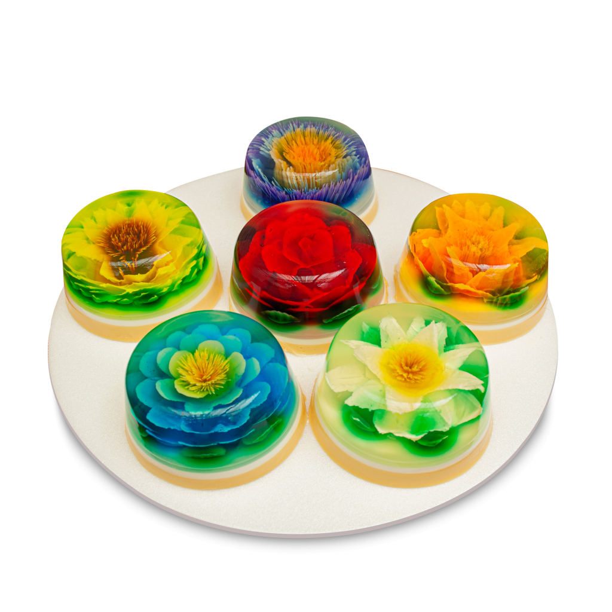
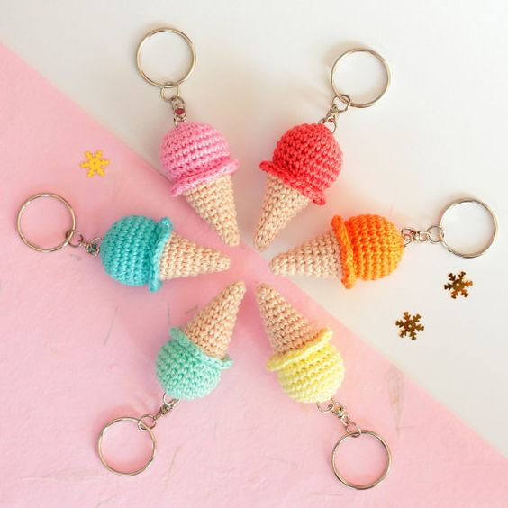
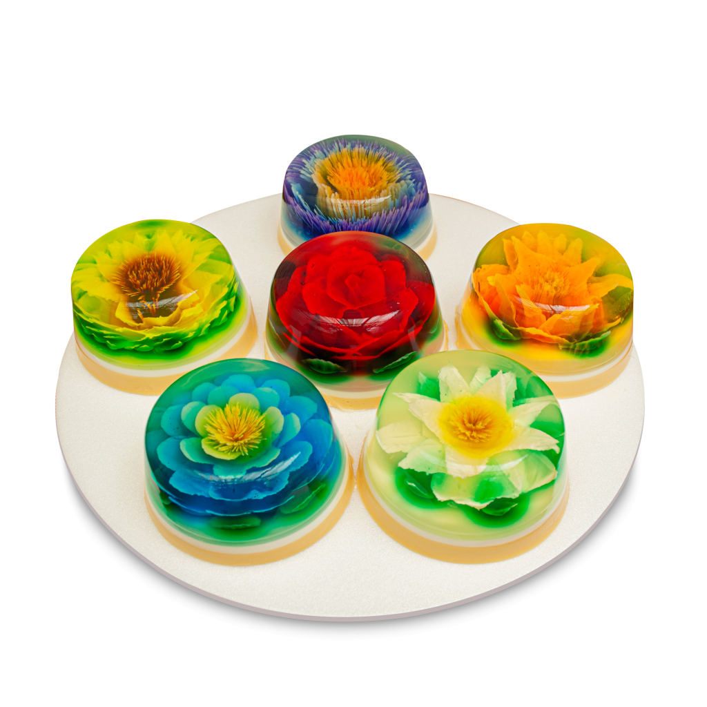
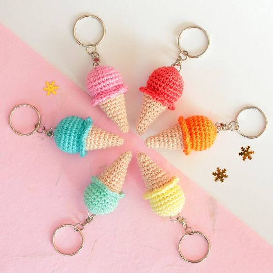

Nací un 27 de febrero de 1999, tengo 24 años. Actualmente vivo en San Mateo Otzacatipan y estudio Ingeniería Química en la Universidad Politécnica de Otzolotepec
Algunas cosas que me gusta hacer son leer, mi libro favorito es "donde habitan los angeles" de claudia celis.
Me gusta ver películas, comer pizza, el helado napoliano, las enchiladas. Me gusta mucho el clima en invierno, por ello mi mes favorito es Diciembre. Me gusta pasar el tiempo jugando juegos de mesa, ecuchando música, leyendo o viendo series o películas de todo tipo; comedia, acción, terror o suspenso. Me gusta mucho la naturaleza, las flores, y el café.
También me gusta mucho hacer postres, como gelatinas, pays, flanes, he preparado algunos pasteles o panes, pero me gustaría prácticar más. Me gusta el crochet, sin embargo, soy muy inexperta. solamente eh tejido un llavero y un osito pequeño y algunos intentos fallidos.
 


